A Cartographic Metaphysics of the Atoll.O metafizică cartografică a atolului.
Micronesia’s genius is its encoding of vast sacred geography through non-literate systems and profound adaptation to the atoll. From Nauru’s martial resilience to Tuvalu’s sinking horizon and Kiribati’s shark-tooth cosmology, these objects read the ocean as both lifeline and encroaching void.Geniul Microneziei constă în codificarea unei vaste geografii sacre prin sisteme non-scrise și o adaptare profundă la atol. De la reziliența marțială a statului Nauru la orizontul care se scufundă al arhipelagului Tuvalu și cosmologia dinților de rechin din Kiribati, aceste obiecte citesc oceanul deopotrivă ca sursă de viață și ca vid care înaintează.
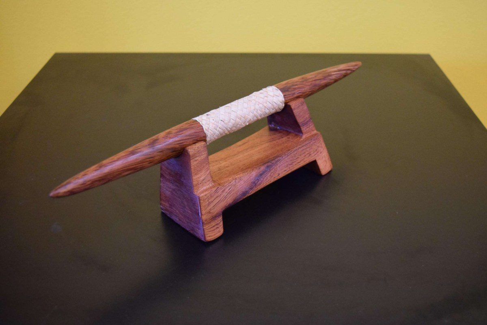
Nauru · Carved wood
Gifted by President Lionel Rouwen Aingimea; a Kanak-style spear reflecting the martial traditions that defended scarce island resources.Gifted by President Lionel Rouwen Aingimea; a Kanak-style spear reflecting the martial traditions that defended scarce island resources.
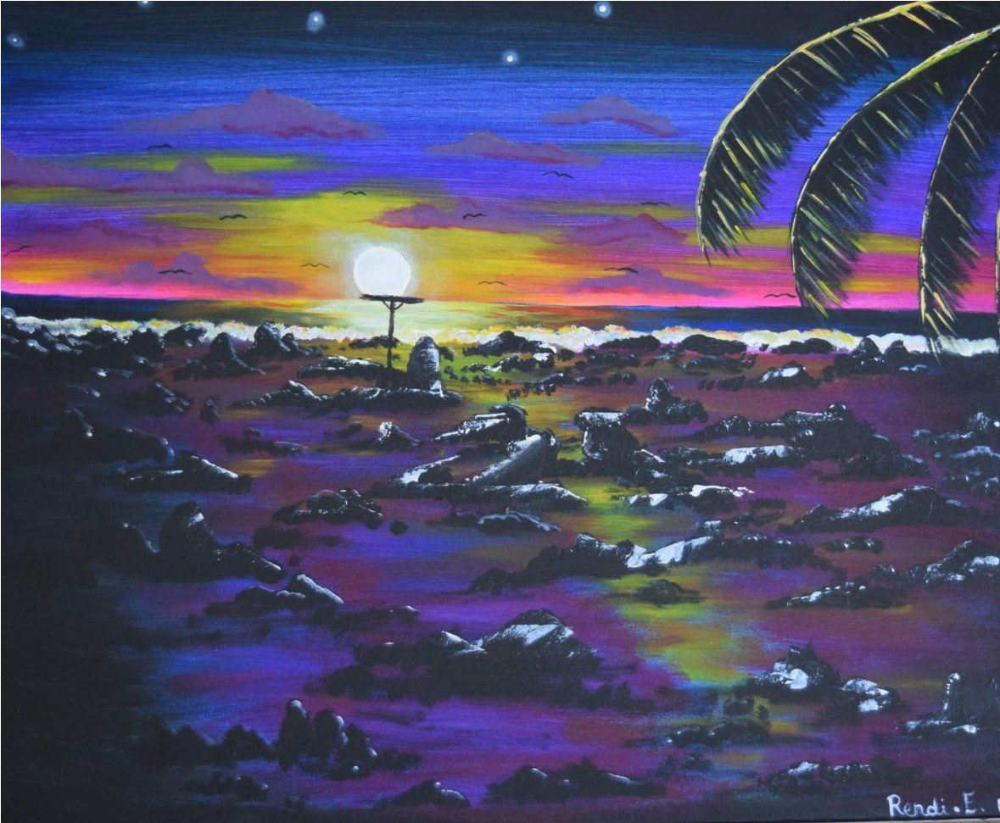
Rendina Edward, Nauru · Painting
A longing for the pre-mining landscape — a reclamation of sacred space through memory after the devastation of phosphate extraction.A longing for the pre-mining landscape — a reclamation of sacred space through memory after the devastation of phosphate extraction.
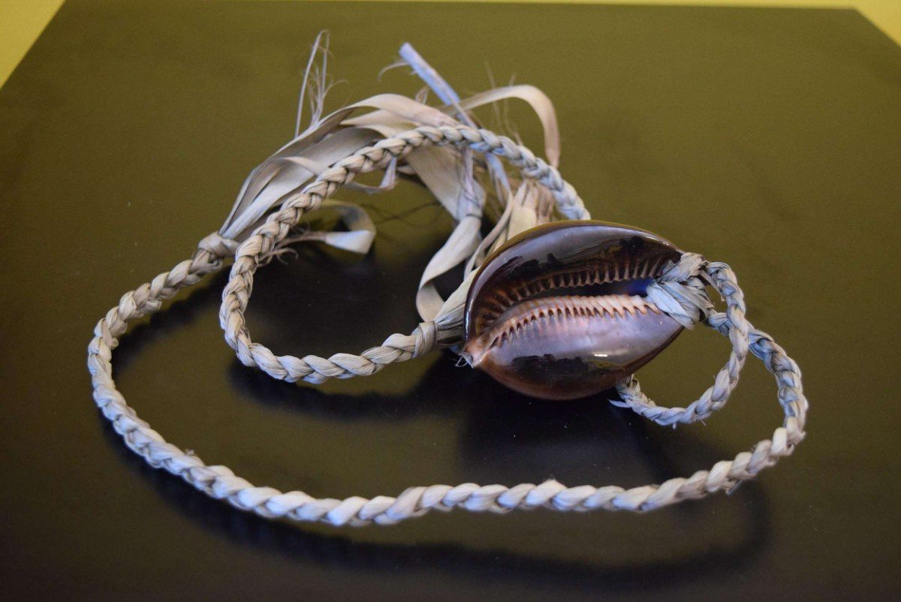
Nauru · Shell, braided fibre
A braided pendant set with cowrie, worn as adornment and marker of identity.A braided pendant set with cowrie, worn as adornment and marker of identity.
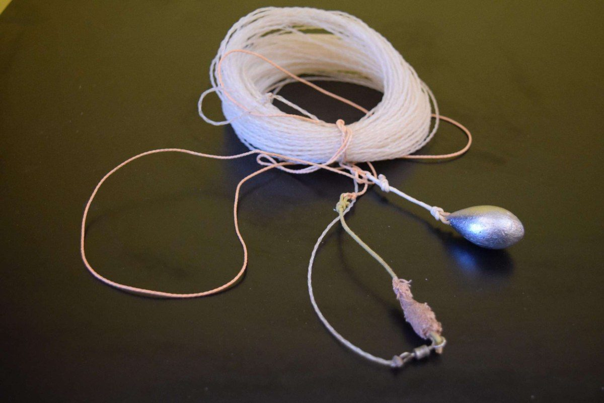
Nauru · Fibre, weight
Precision equipment of an atoll people attuned to the rhythms of sea and sky.Precision equipment of an atoll people attuned to the rhythms of sea and sky.
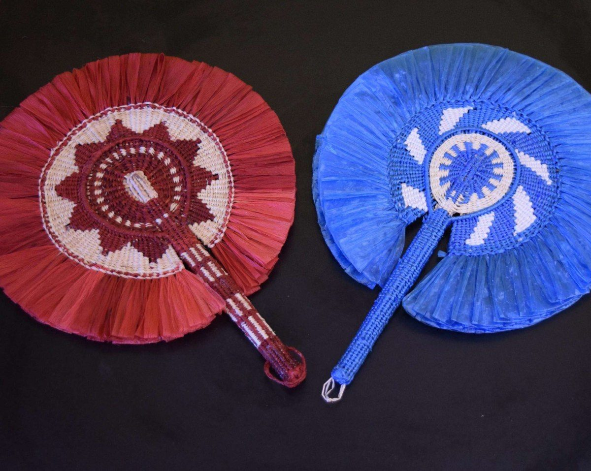
Nauru · Dyed plant fibre
Paired fans representing two districts of the island republic.Paired fans representing two districts of the island republic.
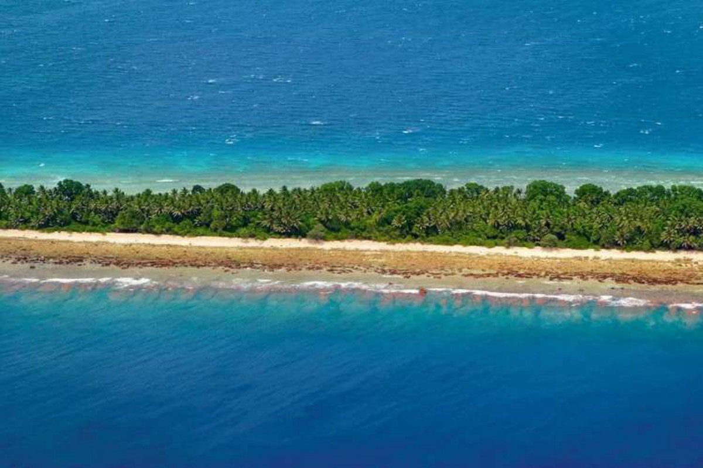
Radu Buema, Funafuti (2015) · Photographic series
Documenting the king tides flooding Funafuti atoll — a stark modern hierophany in which the sea, once the source of life, becomes an encroaching void.Documenting the king tides flooding Funafuti atoll — a stark modern hierophany in which the sea, once the source of life, becomes an encroaching void.
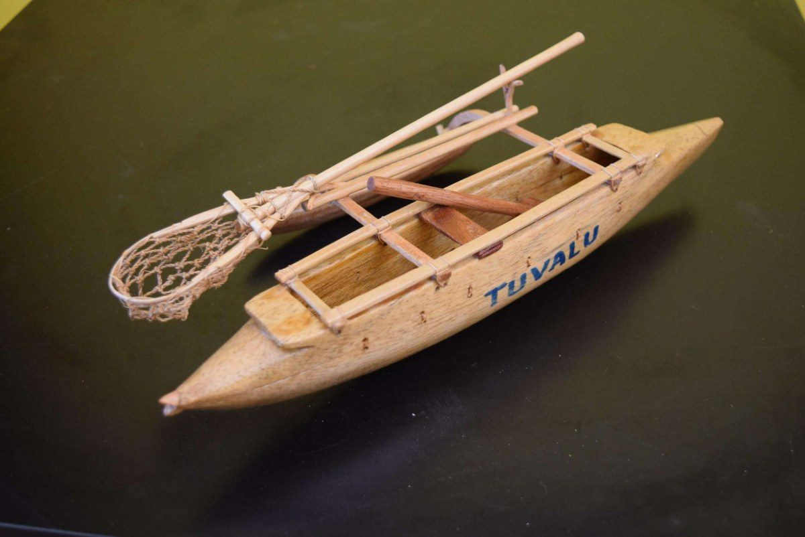
Tuvalu · Wood, fibre
The canoe as the ultimate technology of survival for a society wholly attuned to marine rhythm.The canoe as the ultimate technology of survival for a society wholly attuned to marine rhythm.
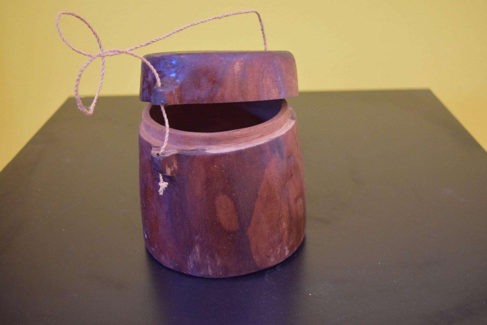
Tuvalu · Turned wood
A watertight tackle box, its curved form a small masterpiece of atoll craft.A watertight tackle box, its curved form a small masterpiece of atoll craft.
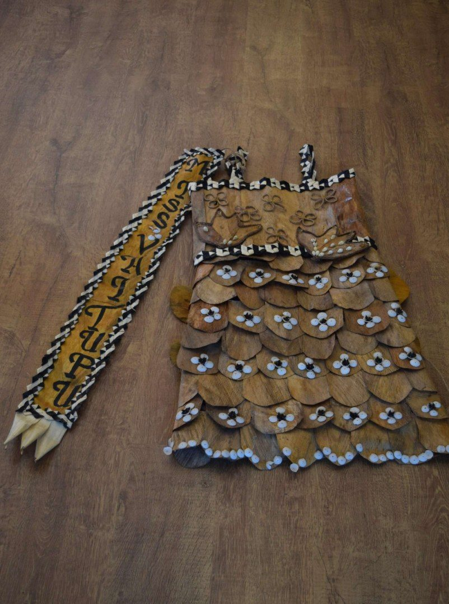
Tuvalu · Coconut fibre, shell
Ceremonial dress crafted entirely from the materials of the coconut palm and reef.Ceremonial dress crafted entirely from the materials of the coconut palm and reef.
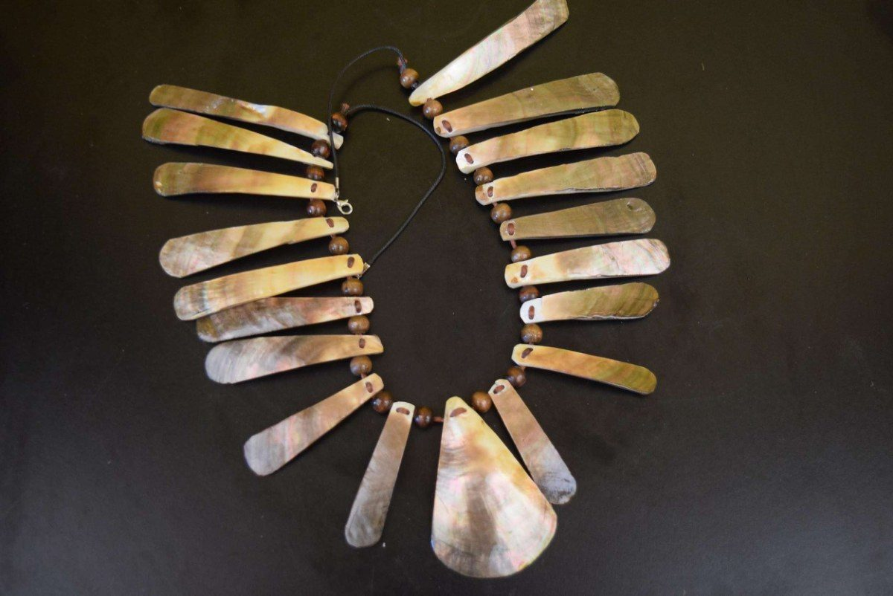
Tuvalu · Shell
A necklace of graduated shell plates marking chiefly status.A necklace of graduated shell plates marking chiefly status.
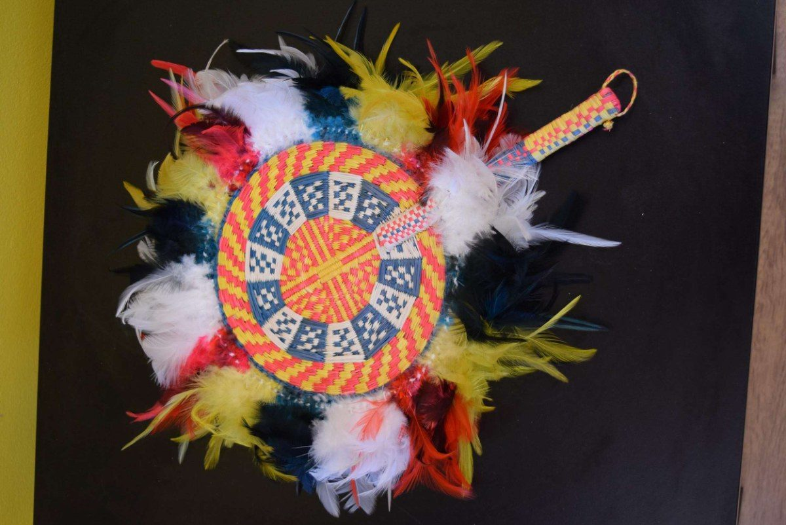
Tuvalu · Fibre, feather
Vivid woven craft combining fibre and feather in radial design.Vivid woven craft combining fibre and feather in radial design.
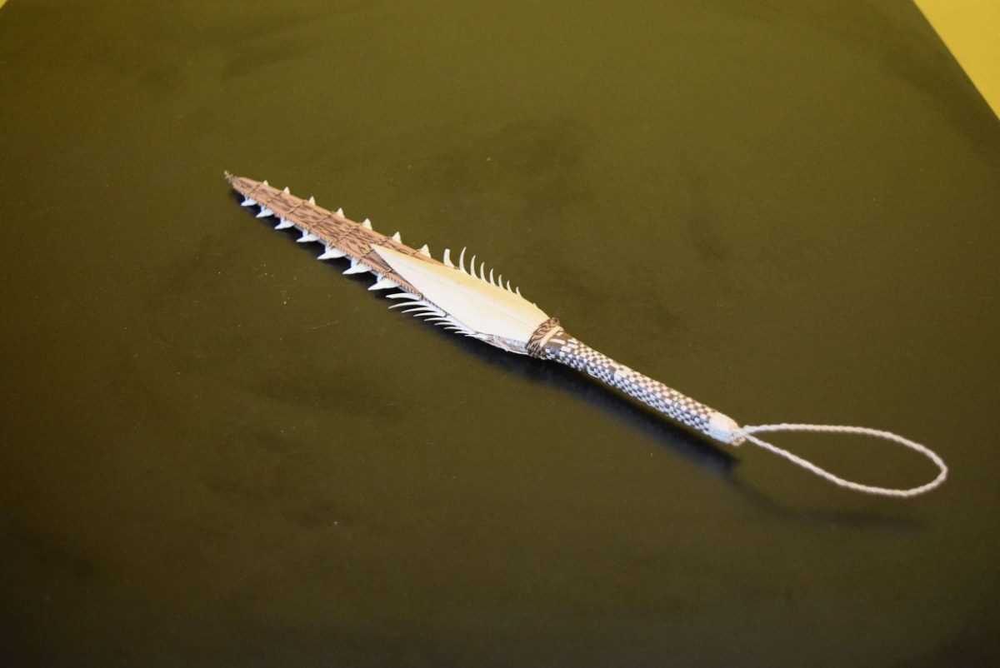
Kiribati · Wood, coconut fibre, shark teeth
Lacking metal, I-Kiribati warriors lined swords with shark teeth — drawing on the shark’s apex power to imbue the warrior with oceanic ferocity.Lacking metal, I-Kiribati warriors lined swords with shark teeth — drawing on the shark’s apex power to imbue the warrior with oceanic ferocity.
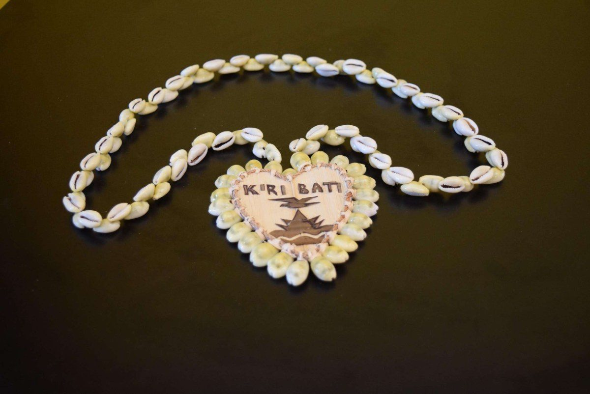
Kiribati · Shell, fibre
A cowrie necklace bearing a heart-shaped pendant emblazoned with the national emblem.A cowrie necklace bearing a heart-shaped pendant emblazoned with the national emblem.
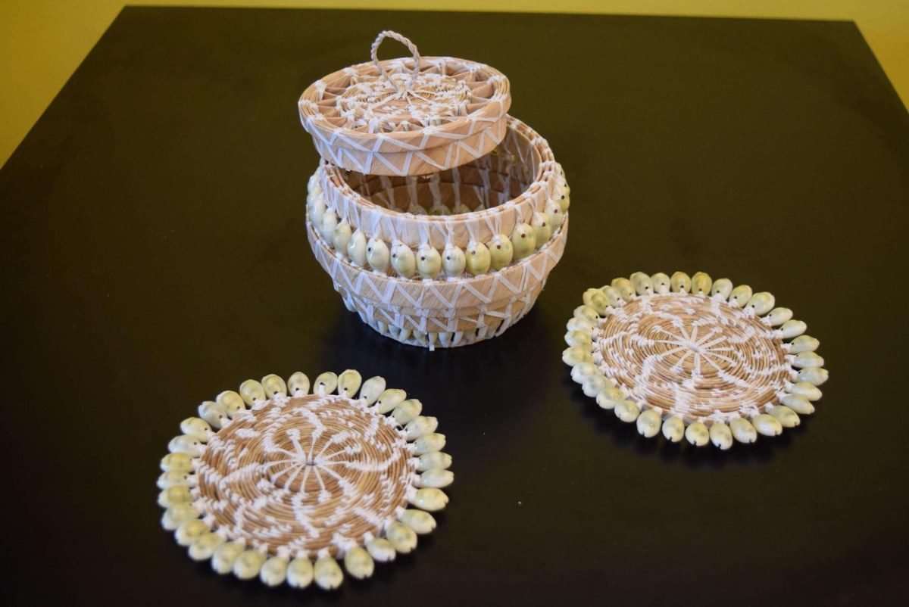
Kiribati · Fibre, shell
Finely woven vessels ringed with shell, at once utilitarian and ceremonial.Finely woven vessels ringed with shell, at once utilitarian and ceremonial.
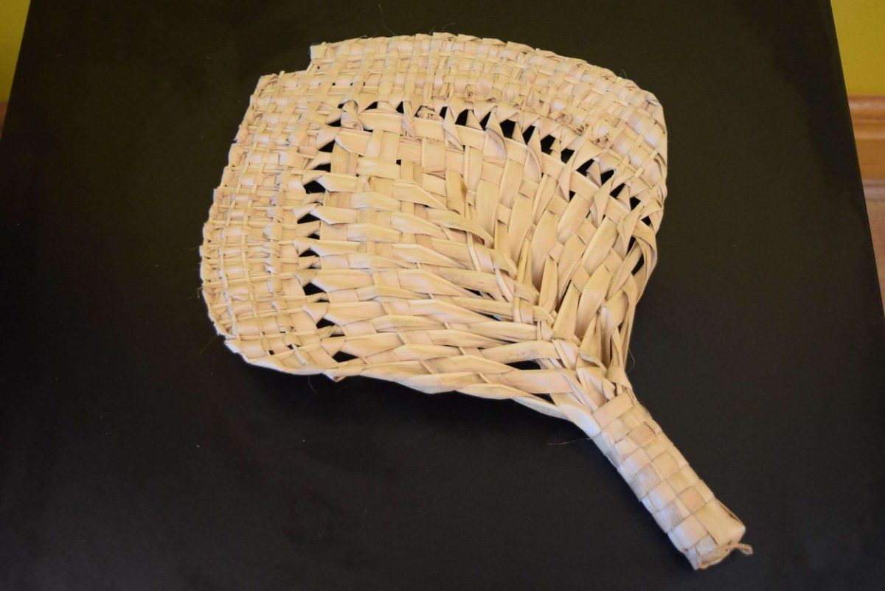
Kiribati · Plaited palm leaf
An openwork fan plaited from palm, cooling the equatorial air.An openwork fan plaited from palm, cooling the equatorial air.